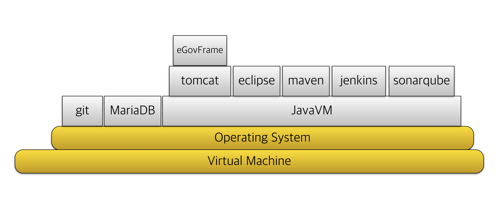

과거 소프트웨어 개발을 위한 환경을 구축하기 위해서는 고가의 유료툴이 필요했다. 유닉스 시스템부터 고가의 장비에 설치된 OS이었기 때문에 소프트웨어 개발을 위해서 개인이 접근하기 어려운 환경이었다. 하지만, 리누스 토발즈의 리눅스가 전파되고, 그 OS에서 촉발된 GNU 운동 때문에 gcc 등의 소프트웨어 개발을 무료로 사용 가능한 개발 환경을 개인도 쉽게 접근할 수 있게 되었다.
웹 플랫폼이 등장하면서 자바와 함께 아파치 재단에서 키워진 많은 소프트웨어들은 서버, 라이브러리, 프레임워크, DB 등으로 범위를 넓혔고, 기업용 개발 환경도 이클립스의 등장과 함께 개발도구와 개발 환경은 비싼 비용을 들이지 않아도 된다라는 인식을 고착시키는데 일조했다.
이 문서에서는 오픈소스 소프트웨어를 통해서 쉽게 시작할 수 있는 개발환경에 대해서 설명하고, 소프트웨어 개발을 처음 접하는 사람도 어렵지 않게 개발 환경을 구축하는 방법을 제시한다.
모로 가도 서울만 가면 된다는 말처럼 목표한 성과물을 성취할 수 있도록 업계에서 다뤄지는 오픈소스 소프트웨어를 통한 개발 도구와 환경을 통해 원하는 소프트웨어를 만들 수 있기를 바라며 시작한다.
공공기관과 기업에서 가장 많이 사용하는 플랫폼인 자바 플랫폼을 기준으로 설명할 것이다. 아울러 개발자들의 OS가 윈도우즈, 맥, 리눅스 등 다양하기 때문에 서버로 많이 사용되는 리눅스 시스템에 맞춰 개발하는 것을 추천하고, 이를 위해서 가상머신을 통해서 개발하는 방법과 오픈소스 기반이 되는 git 버전관리 시스템을 기준으로 할 것이다.
다루게 될 오픈소스 제품들의 스택은 다음 그림과 같다.

사용할 오픈소스 소프트웨어의 목록이다.
이미 설치가 된 가상머신은 다음 주소에서 다운로드할 수 있게 했다.
https://s3-ap-northeast-1.amazonaws.com/nsr/centos67.ova
(2G이상)
3.1 오픈소스 소프트웨어 개발 환경 개요
오픈소스 제품들이 개발될 때에 사용하는 기법들은 ALM(Application Lifecycle Management)와 잘 맞아 떨어진다. ALM이라 함은 애플리케이션을 코딩과 테스트, 실행으로만 보지않고, 애플리케이션의 기획부터 출시, 그리고 고객의 피드백을 통한 유지보수까지 포함한 개발의 전과정을 관리하는 것이다.
3.1.1 오픈소스 ALM 도구
ALM을 위해서 가장 손쉽게 사용할 수 있는 방법은 ALM을 지원하는 서비스를 이용하는 것이다. GitHub이 대표적인 사이트이고, ALM을 위해서 필요한 기능을 제공한다.
ALM을 위해서 필요한 요소는 다음과 같다.
소스 저장소는 말그대로 애플리케이션의 프로그램 소스를 버전별로 관리할 수 있는 기능이다. RCS, CVS, Subversion, VSS, ClearCase와 같은 네트워크를 통해서 접근할 수 있는 버전 관리 시스템(Version Control System; VCS)이 있고, 네트워크가 끊겨도 버전관리가 가능한 분산 버전 관리 시스템(Distributed Version Control System; DVCS)가 있다. DVCS 제품으로는 git과 mercurial이 대표적이다.
직접 서버를 구축해서 활용할 수도 있고, GitHub(https://github.com), BitBucket(https://bitbucket.com), nforge(http://dev.naver.com/projects) 서비스를 무료로 이용할 수도 있다.
오픈소스 개발을 꼼꼼하게 하기 위해서는 작업목록의 관리가 필요하다. 이를 위해서 이슈트래커(issue tracker)라는 것이 필요하고, 이를 지원하는 오픈소스 제품들이 다양하게 사용되고 있다.
3.1.2 Virtual Machine 이미지로 구성된 개발 환경 전체 구조
3.2 오픈소스 개발 도구
3.2.1 가상 머신
3.2.2 Git
Git 이란 파일의 변경 이력을 관리할 수 있는 버전관리시스템이다. CVS, SVN과 달리 네트워크가 끊긴 상황에서도 버전 기록(commit)이 가능하다.
리눅스 개발자로 유명한 리누스 토발즈가 개발했고, Git을 이용해서 만든 GitHub.com 서비스를 통해서 크게 확산되었다.
GitHub에서는 프로젝트별로 관리가 가능하다.
오픈소스처럼 공개된 프로젝트를 무료로 지원할 뿐만 아니라 사정에 따라 비밀 저장소를 무료로 사용하기 원한다면 BitBucket, NForge 등을 이용할 수도 있다.
a. 다운로드, 설치
http://git-scm.com 에서 Windows, Linux, MacOSX 다운로드 가능
b. 사용자 설정
코드를 변경한 사람의 이름과 이메일을 등록
git bash 실행git config --global user.email "kenu.heo@gmail.com"git config --global user.name "kenu"
c. Git 시작하기
git init
.git 폴더가 생기면서 이하 파일 버전관리 시작
d. 관리 파일 추가하기
git add filename
index에 추가. stage에 올라감.
git add *
git add .
하위 디렉토리 전부 추가
git status 명령으로 상태 확인
Git 파일 상태
e. 버전 등록하기git commit -m "메시지"
f. 변경 이력 보기
git log
git log --oneline
g. 이전 버전으로 복원하기
git reset --hard
git reset --hard versionhash
h. 파일 제외하기
.gitignore 파일에 패턴 추가
Part 2 코드 공유
i. GitHub 회원가입
https://github.com
j. GitHub 프로젝트 만들기
new Repository 메뉴 선택
k. 프로젝트 PC로 가져오기
git clone https://github.com/아이디/프로젝트명.git
git clone https://github.com/그룹명/프로젝트명.git
l. 원격 코드 가져오기
git pull
m. 원격에 코드 올리기
git push
참고
누구나 쉽게 이해할 수 있는 Git 입문
http://backlogtool.com/git-guide/kr/
Git 브랜치 배우기
http://learnbranch.urigit.com/
A successful git branching model
http://dogfeet.github.io/articles/2011/a-successful-git-branching-model.html
3.2.3 JDK
3.2.4 이클립스
3.2.5 Maven
3.2.6 Jenkins
3.2.7 Sonarqube
3.3 eGov 표준프레임워크